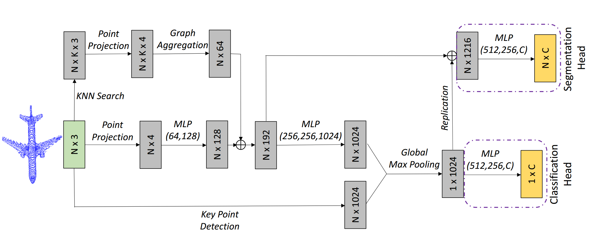

SRINet: Learning Strictly Rotation-Invariant Representations for Point Cloud Classification and Segmentation
Accepted by ACM MM, 2019.

Abstract
Point cloud analysis has drawn broader attentions due to its increasing demands in various fields. Despite the impressive performance has been achieved on several databases, researchers neglect the fact that the orientation of those point cloud data is aligned. Varying the orientation of point cloud may lead to the degradation of performance, restricting the capacity of generalizing to real applications where the prior of orientation is often unknown. In this paper, we propose the point projection feature, which is invariant to the rotation of the input point cloud. A novel architecture is designed to mine features of different levels. We adopt a PointNet-based backbone to extract global feature for point cloud, and the graph aggregation operation to perceive local shape structure. Besides, we introduce an efficient key point descriptor to assign each point with different response and help recognize the overall geometry. Mathematical analyses and experimental results demonstrate that the proposed method can extract strictly rotation-invariant representations for point cloud recognition and segmentation without data augmentation, and outperforms other state-of-the-art methods.